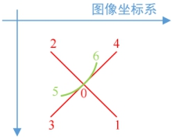
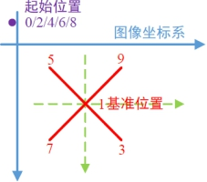

Công cụ này dùng để tạo ra vị trí tuyệt đối hoặc vị trí tương đối của trục nền tảng trong quá trình hiệu chuẩn trục nền tảng, cũng có thể tạo ra vị trí tuyệt đối hoặc vị trí tương đối của trục camera trong quá trình hiệu chuẩn trục camera, và quyết định có chụp ảnh tại vị trí đó hay không. Trong cửa sổ thuộc tính có thể thiết lập loại nền tảng sử dụng trong dự án thực tế, hướng của từng trục, v.v. Thiết lập thuộc tính trục XY là “camera”, có thể tạo ra vị trí tuyệt đối hoặc vị trí tương đối của trục camera cần thiết cho hiệu chuẩn trục camera.
Lấy cơ cấu tay máy loại nền tảng XYD làm ví dụ, nguyên lý cơ bản của công cụ hiệu chuẩn chuyển động tay máy là: tay máy mang sản phẩm di chuyển theo đường dẫn như hình 1, camera chụp ảnh các điểm đánh dấu trên sản phẩm, đưa khoảng cách chuyển động của tay máy và tọa độ ảnh của camera vào công thức chuyển đổi để tính toán, thiết lập mối quan hệ ánh xạ giữa hệ tọa độ ảnh và hệ tọa độ nền tảng.

Vị trí 0, 1, 2, 3, 4 trong hình 1 là chuyển động tịnh tiến, dùng để hiệu chuẩn mối quan hệ xoay và thu phóng giữa các hệ tọa độ; vị trí 0, 5, 6 là chuyển động xoay, dùng để hiệu chuẩn mối quan hệ tịnh tiến giữa các hệ tọa độ. Chức năng của công cụ Tiêu chuẩn lấy vị trí trục hiệu chuẩn là căn cứ vào loại nền tảng để tạo ra tổng số bước chuyển động hiệu chuẩn tương ứng, dựa trên vị trí trục hiện tại và bước chuyển động đầu vào, đồng thời theo chỉ số đầu vào để tạo ra tọa độ nền tảng tương ứng với chỉ số cụ thể. Nguyên lý hiệu chuẩn của các loại nền tảng còn lại tương tự như trên, chỉ khác nhau về số bước chuyển động và đường dẫn.
| Phân loại | Tên tham số | Mô tả tham số |
|---|---|---|
| Cửa sổ thuộc tính | Loại nền tảng | Có sáu tùy chọn loại XYD/XY/XD/YD/X/Y/D, tương ứng với sáu loại nền tảng trong dự án thực tế. |
| Hướng dương trục | Dùng để thiết lập hướng trục X/Y/D theo dự án thực tế. | |
| Thuộc tính trục | Dùng để thiết lập thuộc tính trục X/Y/D theo dự án thực tế, là trục camera hay trục nền tảng. | |
| Bước chuyển động trục | Dùng để thiết lập bước chuyển động của trục X/Y/D theo dự án thực tế. | |
| Có phải vị trí trục tuyệt đối hay không | Thiết lập theo dự án thực tế xem có phải vị trí trục tuyệt đối hay không, từ đó xác định vị trí trục cơ khí đầu ra là vị trí tuyệt đối hay vị trí tương đối. | |
| Loại bỏ khe hở ngược chiều | Quyết định có loại bỏ khe hở ngược chiều hay không. |
|
| Cửa sổ hình ảnh | Không | Không |
| Chuỗi dữ liệu | Vị trí trục ban đầu | Thiết lập vị trí trục ban đầu, thường lấy được từ giao tiếp với nền tảng tay máy. |
| Giá trị chỉ số | Nhập chỉ số bước, dùng để quyết định đầu ra vị trí trục tương ứng. |
|
| Giao diện nâng cao | Không | Không |
| Phân loại | Tên tham số | Mô tả tham số |
|---|---|---|
| Cửa sổ giám sát | Vị trí trục | Kết quả vị trí trục tương ứng với giá trị chỉ số |
| Bước chuyển động tương tác | Bước chuyển động tương tác của trục đầu ra | |
| Hướng trục | Hướng dương của trục đầu ra | |
| Có chụp ảnh hay không | Có chụp ảnh tại vị trí trục hiện tại đã tính toán hay không | |
| Tổng số bước chuyển động hiệu chuẩn | Tổng số vị trí chuyển động hiệu chuẩn được tính toán từ điều kiện đầu vào | |
| Tổng số vị trí chụp ảnh | Số lượng vị trí chụp ảnh trong tất cả các vị trí chuyển động | |
| Số lượng vị trí chụp ảnh hiệu chuẩn tịnh tiến | Số lượng vị trí chụp ảnh dùng cho hiệu chuẩn tịnh tiến trong tất cả các vị trí chuyển động | |
| Số lượng vị trí chụp ảnh hiệu chuẩn xoay | Số lượng vị trí chụp ảnh dùng cho hiệu chuẩn xoay trong tất cả các vị trí chuyển động | |
| Kết quả thực thi | Kết quả thực thi công cụ | |
| Thời gian thực thi | Thời gian thực thi công cụ | |
| Cửa sổ hình ảnh | Không | Không |
| Chuỗi dữ liệu | Vị trí trục | Kết quả vị trí trục tương ứng với giá trị chỉ số, cung cấp cho công cụ sau sử dụng, giống tham số cửa sổ giám sát. |
| Bước chuyển động tương tác | Bước chuyển động tương tác của trục, cung cấp cho công cụ sau sử dụng, giống tham số cửa sổ giám sát. | |
| Hướng trục | Hướng dương của trục, cung cấp cho công cụ sau sử dụng, giống tham số cửa sổ giám sát. | |
| Có chụp ảnh hay không | Có chụp ảnh tại vị trí trục hiện tại hay không, cung cấp cho công cụ sau sử dụng, giống tham số cửa sổ giám sát. | |
| Tổng số bước chuyển động hiệu chuẩn | Tổng số vị trí chuyển động hiệu chuẩn, cung cấp cho công cụ sau sử dụng, giống tham số cửa sổ giám sát. | |
| Tổng số vị trí chụp ảnh | Số lượng vị trí chụp ảnh trong tất cả các vị trí chuyển động, cung cấp cho công cụ sau sử dụng, giống tham số cửa sổ giám sát. | |
| Số lượng vị trí chụp ảnh hiệu chuẩn tịnh tiến | Số lượng vị trí chụp ảnh dùng cho hiệu chuẩn tịnh tiến trong tất cả các vị trí chuyển động, cung cấp cho công cụ sau sử dụng, giống tham số cửa sổ giám sát. | |
| Số lượng vị trí chụp ảnh hiệu chuẩn xoay | Số lượng vị trí chụp ảnh dùng cho hiệu chuẩn xoay trong tất cả các vị trí chuyển động, cung cấp cho công cụ sau sử dụng, giống tham số cửa sổ giám sát. |
Giá trị chỉ số biểu thị là vị trí thứ mấy, ví dụ hiệu chuẩn nền tảng XYD tương ứng với 7 bước hiệu chuẩn, thực tế là di chuyển 9 bước (lần), đi qua 7 vị trí, trong đó vị trí ban đầu chiếm ba lần. Vị trí chuyển động nhìn từ hình ảnh là: vị trí ban đầu, phải dưới, trái trên, trái dưới, phải trên, vị trí ban đầu, xoay theo chiều kim đồng hồ, xoay ngược chiều kim đồng hồ, vị trí ban đầu. Giá trị chỉ số tương ứng là bước thứ mấy, ví dụ chỉ số bằng 2 tương ứng vị trí trái trên, chỉ số bằng 0 tương ứng vị trí ban đầu. Trong đó lần đi vị trí ban đầu cuối cùng không chụp ảnh, chỉ để đưa nền tảng trở về vị trí ban đầu.
Chuyển động tịnh tiến của tay máy có thể tồn tại khe hở ngược chiều, tức là khi hướng chuyển động thay đổi sẽ có một đoạn hành trình trống, động cơ quay nhưng vít me ray dẫn hướng không chuyển động. Để loại bỏ khe hở ngược chiều, khi thiết kế đường dẫn chuyển động đã tăng thêm vị trí khởi đầu. Tức là tay máy mỗi lần đều từ vị trí khởi đầu chuyển động đến từng vị trí chụp ảnh, nhưng tại vị trí khởi đầu thì không chụp ảnh, như hình 2. Việc có sử dụng đường dẫn chuyển động loại bỏ khe hở hay không được quyết định bởi chuyển động tịnh tiến của tay máy có tồn tại khe hở ngược chiều hay không.

参见“\Samples\标准标定+基准两点对位.gvp”